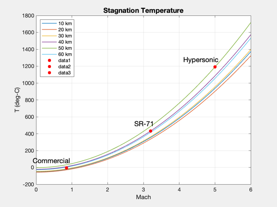

Compute / plot the stagnation temperature vs. mach for several altitudes
------------------------------------------------------------------------
See also TemperatureStagnation, StdAtm
------------------------------------------------------------------------
m = linspace(0,6);
h = [10 : 10 : 60]*1e3;
t0 = zeros(length(h),length(m));
for k = 1:length(h)
p = StdAtm(h(k));
v = p.speedOfSound*m;
t0(k,:) = TemperatureStagnation( v, h(k) ) - 273;
end
hHyper = 50000;
mHyper = 5;
pHyper = StdAtm( hHyper );
vHyper = mHyper*pHyper.speedOfSound;
tHyper = TemperatureStagnation( vHyper, hHyper ) - 273;
hSR71 = 40000;
mSR71 = 3.2;
pSR71 = StdAtm( hSR71 );
vSR71 = mSR71 * pSR71.speedOfSound;
tSR71 = TemperatureStagnation( vSR71, hSR71 ) - 273;
hComm = 35000;
mComm = 0.85;
pComm = StdAtm( hComm );
vComm = mComm * pComm.speedOfSound;
tComm = TemperatureStagnation( vComm, hComm ) - 273;
Plot2D(m,t0,'Mach','T (deg-C)','Stagnation Temperature')
leg = cell(1,length(h));
for i=1:length(h)
leg{i}=sprintf('%d km',h(i)*1e-3);
end
legend(leg{:}, 'location','NorthWest' )
hold on
x = [mHyper, mSR71, mComm];
y = [tHyper, tSR71, tComm];
lab = {'Hypersonic','SR-71','Commercial'};
for j=1:length(x)
plot(x(j), y(j),'r.','markersize',18)
text(x(j)+.1, y(j)+90, lab{j},...
'fontsize',14,'horizontalalignment','right');
end
